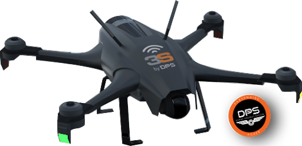
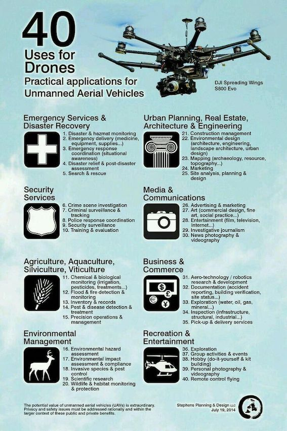

Drones: Our Present and our Future
Drones offer a wide variety of uses in security related operations. The most obvious one is surveillance. Using drones for surveillance instead of helicopters offers several advantages : the first one being the cost, and the difference is big. Another advantage is that surveillance with drones leaves no "blind spots" (visually uncovered areas). Their precision is superior to that of other devices. UCAVs (Unmanned Combat Aerial Vehicules) also possess relative stealth and do not produce much noise, which make them less noticeable and agressive looking. The IFSEC also gives us more potential uses as for drones in security: Tracking drones are also an interest for the scientists of tomorrow, for most of the reasons cited above. They are indeed hundreds of times cheaper than hiring a helicopter as well as being more discrete which would leave less opportunity for the targets tracked to anticipate their next move. Finally, license plate identification might become another use of drones as they can be deployed and functional much quicker than human means once the crime or incident scene has been located. 
Drones are also a big hope concerning emergencies and disasters around the world. If we take a closer look at the latter, drones are optimal when paired with firemen (for example) as they are fast, provide rapid information about damage, survivors, infrastructure state, and give a general map giving an idea of the current situation. It has proven effective during fires, floods, and other natural disasters. More information about the use of drones in disasters can be found on precisionhawk.com. Drones can also be helpful in "regular emergencies". For example, in New-York, the NYPD (New York Police Department) has used drones to be alerted and given information as quick as possible whenever a collision or incident appeared. Some even speculate about eventual "drone ambulances" deployed for any kind of accidents. With the arrival of new technology such as 5G, Visual Recognition, Artificial Intelligence (AI) or Machine Learning, there is a high chance that drones might even become a full-time device used by the authorities in a near future. Here's a video showing what it could look like in a few years.
Disasters, emergencies and security are not the only domains of application concerning drones. The latter are also studied in order to be deployed for other uses. Those include : - Urban Planning - Architecture - Engineering - Communication - Agriculture - Business - Environmental Objectives - Entertainment 